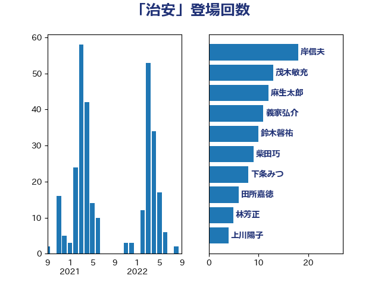

単語「治安」

| 岸信夫 | 自由民主党 | 18 回 |
| 茂木敏充 | 自由民主党 | 13 回 |
| 麻生太郎 | 自由民主党 | 12 回 |
| 義家弘介 | 自由民主党 | 11 回 |
| 鈴木馨祐 | 自由民主党 | 10 回 |
| 柴田巧 | 日本維新の会 | 9 回 |
| 下条みつ | 立憲民主党 | 8 回 |
| 田所嘉徳 | 自由民主党 | 6 回 |
| 林芳正 | 自由民主党 | 5 回 |
| 上川陽子 | 自由民主党 | 4 回 |
| 山口俊一 | 自由民主党 | 4 回 |
| 青山繁晴 | 自由民主党 | 4 回 |
| 井野俊郎 | 自由民主党 | 3 回 |
| 大西健介 | 立憲民主党 | 3 回 |
| 小田原潔 | 自由民主党 | 3 回 |
| 東徹 | 日本維新の会 | 3 回 |
| 江田憲司 | 立憲民主党 | 3 回 |
| 浦野靖人 | 日本維新の会 | 3 回 |
| 渡辺周 | 立憲民主党 | 3 回 |
| 菅義偉 | 自由民主党 | 3 回 |
| 赤嶺政賢 | 日本共産党 | 3 回 |
| 赤羽一嘉 | 公明党 | 3 回 |
| 鈴木俊一 | 自由民主党 | 3 回 |
| 高木毅 | 自由民主党 | 3 回 |
| 中曽根康隆 | 自由民主党 | 2 回 |
| 佐藤正久 | 自由民主党 | 2 回 |
| 坂井学 | 自由民主党 | 2 回 |
| 堤かなめ | 立憲民主党 | 2 回 |
| 大西英男 | 自由民主党 | 2 回 |
| 岸田文雄 | 自由民主党 | 2 回 |
| 有村治子 | 自由民主党 | 2 回 |
| 杉本和巳 | 日本維新の会 | 2 回 |
| 松島みどり | 自由民主党 | 2 回 |
| 森まさこ | 自由民主党 | 2 回 |
| 津島淳 | 自由民主党 | 2 回 |
| 牧山ひろえ | 立憲民主党 | 2 回 |
| 田村智子 | 日本共産党 | 2 回 |
| 稲富修二 | 立憲民主党 | 2 回 |
| 藤巻健太 | 日本維新の会 | 2 回 |
| 鬼木誠 | 立憲民主党 | 2 回 |
| 上杉謙太郎 | 自由民主党 | 1 回 |
| 上野賢一郎 | 自由民主党 | 1 回 |
| 二階俊博 | 自由民主党 | 1 回 |
| 井上貴博 | 自由民主党 | 1 回 |
| 伊藤俊輔 | 立憲民主党 | 1 回 |
| 伊藤孝江 | 公明党 | 1 回 |
| 佐藤茂樹 | 公明党 | 1 回 |
| 和田義明 | 自由民主党 | 1 回 |
| 國重徹 | 公明党 | 1 回 |
| 塩川鉄也 | 日本共産党 | 1 回 |
| 大島敦 | 立憲民主党 | 1 回 |
| 山添拓 | 日本共産党 | 1 回 |
| 工藤彰三 | 自由民主党 | 1 回 |
| 木原誠二 | 自由民主党 | 1 回 |
| 梅谷守 | 立憲民主党 | 1 回 |
| 森山浩行 | 立憲民主党 | 1 回 |
| 森本真治 | 立憲民主党 | 1 回 |
| 武田良太 | 自由民主党 | 1 回 |
| 浅田均 | 日本維新の会 | 1 回 |
| 田名部匡代 | 立憲民主党 | 1 回 |
| 田島麻衣子 | 立憲民主党 | 1 回 |
| 田嶋要 | 立憲民主党 | 1 回 |
| 田畑裕明 | 自由民主党 | 1 回 |
| 田野瀬太道 | 無所属 | 1 回 |
| 穂坂泰 | 自由民主党 | 1 回 |
| 篠原孝 | 立憲民主党 | 1 回 |
| 緒方林太郎 | 無所属 | 1 回 |
| 菊田真紀子 | 立憲民主党 | 1 回 |
| 足立康史 | 日本維新の会 | 1 回 |
| 逢坂誠二 | 立憲民主党 | 1 回 |
| 金子俊平 | 自由民主党 | 1 回 |
| 鈴木庸介 | 立憲民主党 | 1 回 |
| 阿部弘樹 | 日本維新の会 | 1 回 |
| 階猛 | 立憲民主党 | 1 回 |
| 青木一彦 | 自由民主党 | 1 回 |
| 青柳仁士 | 日本維新の会 | 1 回 |
| 須藤元気 | 無所属 | 1 回 |
| 鷲尾英一郎 | 自由民主党 | 1 回 |